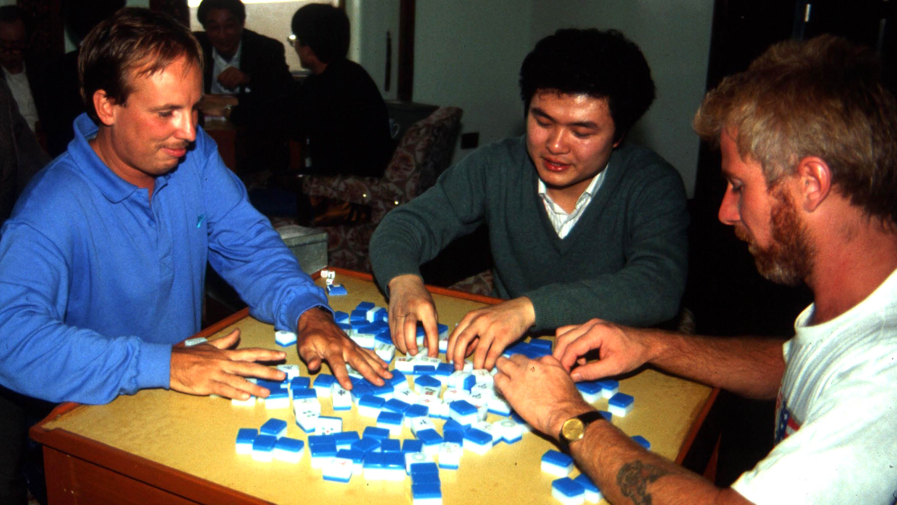
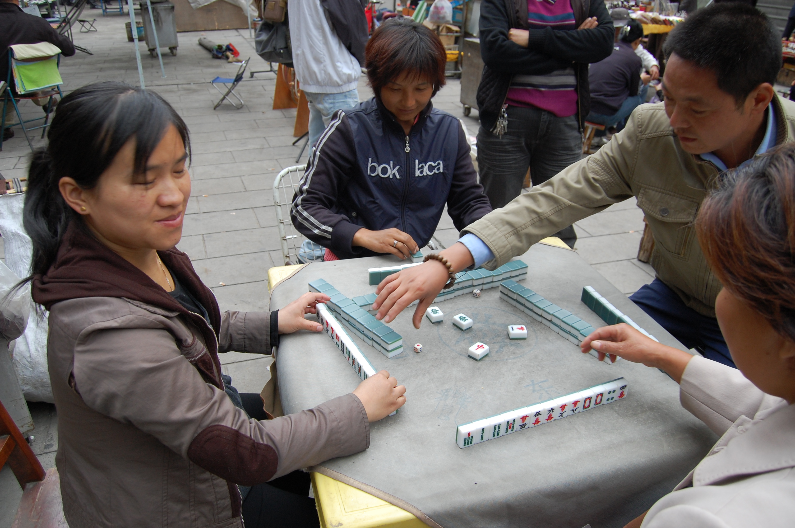

Old Hong Kong mahjong is played with a standard set of 144 mahjong tiles. Sets often include counters (to keep score), dice (to decide how to deal), and a marker to show who the dealer is and which round is being played.
Before the game can begin, players need to be assigned one of the wind positions at the table - those being (in counterclockwise order) East, South, West, and North. East will also be the first dealer. Play proceeds in this counterclockwise order. There are a variety of ways to determine positions. For example, one way is to have each player roll the dice and assign East to the player who rolls the highest, South to the second-highest, and so on. Another way is to shuffle the 4 wind tiles face down and have each player choose one, determining their position.
A match consists of four rounds, each representing a "prevailing wind", starting with East. Once the first round is completed, a second round begins with South as the prevailing wind, and so on. Wind position is significant in that it affects the scoring of the game. In each round at least four hands are played, with each player taking the position of dealer. In the first hand of each round, Player 1 (winner of the dice toss) is East and therefore dealer. In the second hand, Player 2 takes the East position, shifting the seat winds amongst the players counter-clockwise (though players do not physically move their chairs). This continues until all four players have been East (dealer). Whenever a player in the East position wins a hand, or if there is no winner, an extra hand is played with the same seating positions and prevailing wind as in the previous hand. This means that a match may potentially have no limit to the number of hands played (though some players will set a limit of three consecutive hands allowed with the same seat positions and prevailing wind).
All tiles are placed face down on the table and are shuffled. By convention, all players should participate in shuffling using both hands, moving the pieces around the table rigorously and loudly for a lengthy period. Each player then stacks a row of 18 tiles, two tiles high in front of them (for a total of 36 tiles). Players then push each side of their stack together to form a square wall. The dealer throws three dice on the square wall and sums up the total. Counting counter-clockwise so that the dealer is 1 (or 5, 9, 13, 17), so that south (player to the right) is 2 (or 6, 10, 14, 18), etc., a player's quarter of the wall is chosen. Using the exact total on the dice, the player whose wall is chosen then counts the stacks of tiles from right to left. This determines the location where the 'deck' of tiles is cut. Starting from the left of the stacks counted, the dealer draws four tiles for their hand. Proceeding in counter-clockwise order, players take turns drawing blocks of four tiles until each player has 12 tiles. Each player then draws one last tile to make a 13-tile hand. While drawing the 13th piece to complete the initial hand, the dealer will typically also draw a 14th piece to initiate the game. Each player now sets aside any flowers or seasons they may have drawn and takes turns to draw replacement tiles from the wall in the counter-clockwise direction from the dealer. The dealer draws a piece from the wall in a clockwise direction, adding it to their hand. Typically, this draw is performed during the initial deal to speed up play. If this does not complete a legal hand, the dealer then discards a piece (throwing it into the middle of the wall with no particular order in mind).
Each player, in turn, in a counter-clockwise direction, draws a tile from the wall. When drawing, continue around the wall, taking one piece from the wall top first. If that is taken, then the bottom one, moving in the same direction the tiles were dealt (counter-clockwise). The player then discards a tile to maintain a hand of 13. The discarded tile is thrown into the centre and, if desired, the player announces out loud what the piece is. The other players have an opportunity to seize the discarded tile if they can make a meld with it; if no one takes it, the turn continues to the next player. Play continues this way until one player has a legal winning hand and calls out the win while revealing their hand. There are four different ways that regular order of play can be interrupted:
Melds are groups of tiles within the player's hand, consisting of either a pung (three identical tiles), a kong (four identical tiles), a chow (three tiles of the same suit in numerical sequence), or eyes (two identical tiles needed in a winning hand). Melds may be formed by drawing a tile from the wall, or by seizing another player's discard. There are rules governing which player has priority for a discard, and whether the meld should be exposed (displayed to all players) or remain concealed, depending on the manner in which the meld is formed.

